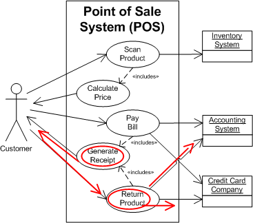

OUM |
Task Overview |
||
Method Navigation |
Current Page Navigation |
||
|
|
||||||||
The purpose of this task is to develop the System Use Case Model.
In a commercial off-the-shelf (COTS) application implementation, the Use Case Model complements business process models in helping the implementation team gain a thorough understanding of business requirements. At a minimum, the Use Case Model should be developed for those requirements that can only be satisfied through custom-built components that extend the functionality of the COTS system and/or integrate the COTS system with other COTS or legacy systems. Development of a Use Case Model for all other business requirements is considered helpful, as they contribute to a better understanding of requirements and can be leveraged to prepare a number of other required work products downstream, such as test scenarios and business procedures documentation.
For projects that involve the upgrade of Oracle products, this task can be used in combination with RD.011 (Review Future Process Model) to help the project team understand interactions between the actors and the system. The focus should be on reviewing the customer's existing use case artifacts rather than creating new ones.
The use cases and actors are refined into a consistent model creating a first-cut view of system scope. Determine who (or what) interacts with the system (actors) and the objectives of this interaction (goals). Actors and use cases are refined in order to create a consistent model. At this point the use case details for each use case in the model have not been specified.
The Use Case Model focuses primarily on defining the high-level functionality of the system under discussion (SuD). This is done from the actor’s point of view (both human and non-human actors) and uses both a diagram and a brief description to define the functionality of the system.
The following is an example of a Use Case Model. It represents the “system” functionality that will automate all or part of the business operations described by the Business Use Case Model (RA.015), and together with a set of supplemental requirements, the Use Case Model defines the scope of requirements for the project.

Use Case Name |
Description |
|---|---|
Return Product |
This use case begins when the customer returns a previously purchased product. The PoS verifies the receipt with its records and credits the customer’s credit card. The use case ends when the system generates a receipt indicating the purchase has been credited. |
A.ACT.GR Gather Solution Requirements
B.ACT.DUCM Develop Use Case Model
C.ACT.FR Finalize Requirements
Use Case Model
The initial Use Case Model (diagram and descriptions together) provide essential input for Analysis, Design and Testing and should be the basis for determining project scope. The Use Case Model includes the following components, as the Use Case Model is iterated on, the components are evolved:
Use Case Diagram - During the Inception phase the Use Case Diagram is a graphical depiction developed at least up to the point that the user-goal level use cases have been determined. In its simplest form this results in an Actor-Goal List, but it is best to draw the diagram to show which actor interacts with each use case.
Use Case Brief Description - Additionally, a brief description can be written for each use case which describes the start, end, and high-level process performed by the use case. Optionally, the names and a brief descriptions of each use case can serve as an index to the use cases depicted in the diagram.
In later phases, more detail is added to the model. In fact, the Use Case Specification (RA.024) actually makes the model more complete as a progressive refinement of the use case takes place. Additionally, it can provide input into the Glossary (RD.042) and Supplemental Requirements (RD.055). The Use Case Model can be derived from business models, such as, the Business Use Case Model (RA.015), process models, the project proposal and the MoSCoW List (RD.045). When the latter has been produced, the MoSCoW List already might have the format of an Actor-Goal List.
The System Use Case Model represents the “system” that will automate all or part of the business operations described by the Business Use Case Model. The system Use Case Model focuses primarily on the interaction between the actors (both human and non-human) and the system. This model generally relates to the Level 2 business process modeling that is performed during the Elaboration phase. Examples of system use cases (from the customer’s perspective regarding a Purchase Product Business Use Case) are: Scan Product, Calculate Price, Pay Bill, and Generate Receipt.
Creating use cases by end user-group (actors in Unified Process terminology) to document requirements ensures a better understanding of the business requirements. Use cases must be specific, and testable. If the requirement cannot be specified in a use case following the RA.024 guidance, then additional refinement and discussion of the requirements are necessary.
You should follow these steps:
No. |
Task Step | Component | Component Description |
|---|---|---|---|
1 |
Find actors. In this step, we identify the main actors representing the users, and any other systems that may interact with the system being developed. | Actor List | The Actor List contains a list of actors and their description. Actors are roles that users or other systems take on in the system. Include one or two phrases describing each actor. There is a technique that suggests not only eliciting actors but also personas - a person from the real world that can assume this role. Instead of calling only an ATM user, people that would really interact with it are represented: an office-boy called John, a grandma called Mary, an executive called Larry. If the business actor model was already created, you can refine business actors via actor generalization/ specialization. |
2 |
Find use cases. This step is usually performed in workshops with representative users with decision power (key users, ambassador users). The facilitator elicits answers about system functionality by asking questions such as, "What should the system do", and "Why is this actor using the system?" For a completeness verification, the facilitator can use two approaches: Top-down: From the main activities and workflows, detail the goals of each actor. Bottom-up: From each actor's point of view, figure out if all goals of that actor are described. |
Actor-Goal List (at user-goal level) or Use Case Descriptions with (optionally) UML Use Case Diagrams |
When a Business Use Case Model is available, the initial Use Case Model is derived from that by analyzing the business use cases. As explained in the APPROACH section below, there can be a n:m mapping from business use cases to system use cases. In its simplest form an initial use case consists of a name, the stakeholders and a brief description of the primary actor's goal. It is also practical to use some coding mechanism (like simple numbering them from 1 to n) for reference purposes. The one stakeholder that "executes" the use case is identified as the primary actor. Other stakeholders that are required to fulfill the goal of the use case are called secondary actors A Use Case Diagram shows a set of use cases and actors and their relationship. Thus providing a functional “view” of the system, its major processes and a boundary on the system scope. It also provides a graphical description of who will use the system and what kinds of interactions they can expect to have with the system. By convention the primary actors are put at the left side of the diagram, the secondary actors at the right and the use cases in the middle. Stakeholders that are not a primary actor nor a secondary actor (but do have an interest in the goal of the use case) are left out of the diagram. At this point of the development of the Use Case Model you can use simple brief descriptions or the casual-dressed format. The use cases will be detailed in the subsequent task, Develop Use Case Details (RA.024). The bottom-up approach is the one that provides the most important usage for the actors. |
3 |
Provide a brief Use Case Description | Use Case Description | A Use Case description is used to capture the intent of the use case and the expected post-conditions. This is often referred to as the Use Case "Brief" Description. This description should not represent detailed scenarios (which are captured in RA.024). Instead it should summarize the process in three sentences or less: “This use case begins when” <actor> <does something> “The system responds by…..” “This use case ends when…” . |
4 |
Check use cases against the Enterprise Repository (optional) | Checked duplicate requirements | If the customer is managing requirements at the enterprise level, check for duplicate or existing use cases in the Enterprise Repository. If the requirement has already been implemented by a reusable component (such as a SOA service) it may be possible to mark it as ‘already implemented’. Please refer to the Enterprise Requirements Management technique for more details. |
5 |
Define scenarios (optional) | Use Case Scenarios | Scenarios are different paths that the system will take when performing the Use Case. For example, the Use Case “Return Product” can have these scenarios: a) Customer does not have a receipt, b) Product was not purchase from this store, c) The Credit Card system is down. This step should only list the possible scenarios, but should not explain “how” the system will handle the situation. |
6 |
If there are too many use cases to comprehend in one level, group related use cases into Use Case Packages. | Use Case Packages | Use Case Packages:
|
7 |
Add supplemental material (optional). | Glossary Supplemental Requirements Sketches and Diagrams |
The Glossary contains the terms used by the users that either are new to the project team or that are dubious. Supplemental Requirements contain requirements (aka non-functional) that do not fit in the use case format. Sketches and Diagrams can be created during the workshop to clarify what is being defined and should be included as part of the specification. Supplemental requirements found for a specific use case may lead to a more generic non-functional requirement that should be included in the Supplemental Requirements (RD.055). Terms may also be found that should be documented in the Glossary (RD.042). |
8 |
Add use cases to Enterprise Repository (optional) | Updated Enterprise Repository | If the customer is managing requirements at the enterprise level, the use cases need to be inserted in the repository for tracking. The requirements should be linked to the enterprise functional, process and/or domain models. Please refer to the Enterprise Requirements Management technique for more details. |
This task should first be performed during the Inception phase of every software development project after which the use cases are being worked out during the following phases.
To determine the first versions of the model, it is recommended to gather appropriate ambassador users in a facilitated workshop. This will provide a broader acceptance and sense of ownership by the customer. Other techniques for eliciting use cases include:
Often one or more of these techniques can also be used as a preparation for a facilitated workshop.
When a Business Use Case Model (RA.015) is available, the initial system use cases can be derived from there. Ideally the Business Use Case Model has been brought down to the level of user-goal business use cases. First you identify all business use cases that will be supported by the SuD. All other business use cases are considered to be out of scope. The remaining set of business use cases can either be transferred into system use cases (meaning that original business Business Use Case Model will change into a Use Case Model), or you can copy the supported business use cases to system use cases, and keep the Business Use Case Model as is.
When transforming business use cases into or mapping them onto system use cases, you may find user-goal system use cases that support multiple business use cases. Incidentally, you may find a business use case that is supported by multiple user-goal system use cases. This usually indicates that the business use case actually is not a user-goal level use case, but a summary use case instead. When you decided to keep the Business Use Case Model, consider to bring down that business use case to the level of user-goal use cases. This makes the mapping of the Business Use Case Model easier because then each user-goal business use case either is not supported (out of scope / manual) or will have a 1:1 mapping on a system use case. Such a mapping is done, for example, when validating the completeness of the Use Case Model. The following picture shows how business use cases can map to system use cases:

As illustrated above, in the business use case Archive Paper Order is a manual use case so there is no transformation to a system use case. For the business use cases Place Customer Order and Place Self-Service Order it appears that they both can be supported by the same system use case Create Order (that is, for the sake of argument as in real life this is not likely as working out the scenario probably will reveal). After working out the scenario of the Register Customer business use case, it turns out that this actually consists of two actions, the first one being the customer registering himself resulting in the system sending a confirmation e-email, and the second one where the customer confirms the registration by following a link in that e-mail. As there can be a time-span in between both actions the Register Customer is not a true user-goal use case (as they will not always be completed in one single setting), so it is mapped on the two system use cases Register Self-Service and Confirm Registration.
The process of identifying system use cases is critical for the scope understanding. In the process of detailing use cases, new risks are detected as well as communication problems and lack of understanding. For example, in the example above at first one could have thought that self-service registration by a customer would be supported sufficiently by a simple web form. After a proper analysis however, it is discovered that the functionality concerning the e-mail confirmations has an impact on the solution architecture, which would likely have led to a significant scope creep would it have been discovered after scoping.
Iterate the task steps above and the techniques suggested to assure the completeness of the model. Note however, that the model will evolve throughout the project as both customer and developers become more familiar with the subject matter the system to develop should support. In practice some use cases might get worked out including all extensions that can be thought of, while others will never be worked out beyond their briefs to which only a triggering event has been added. This depends on how self-explanatory the use case brief will be to both end users on one side and developers on the other.
To save energy and make the process more effective, Cockburn recommends the approach Breadth Before Depth; first develop an overview of the use cases then progressively add details. Some authors refer to this as having a "one mile wide, one inch deep view of the process." This also helps in determining the scope at an early stage of the project.
Create an Actor-Goal List with all use cases at user-goal level (sea-level) and prioritize as we suggest in the MoSCoW List (RD.045). Add use case briefs (2-6 sentences) to the use cases. The Actor-Goal List delimits the scope of the project and the scope of the use case modeling. Have a general idea of all use cases and a clear idea of the scope of the system. Add detail in casual form if needed.
In the Elaboration and Construction phases the task is iterated together with a number of other tasks. See the process diagrams for these phases to see which tasks are iterated as a task group. See the process flow diagrams in the Process Overview files to understand how these tasks are iterated as a group.
In each iteration, more detail is provided to the use cases in the order of their priorities. In most cases the priorities are set so that the most informative and important use cases is given the highest priority. The more risky and architecturally-significant use cases should get a high priority to minimize risk.
For each use case, identify the triggering event and for the use cases that require this, write the main success scenario. In case of complex use cases or use cases that have the most risks associated with them, for each step identify the exception conditions and after that the exception treatment. When an exception in its turn has many steps, consider including it in its own extension use case.
You might want to organize use cases by splitting them into a number of sub-sets or partitions, and iteratively provide details for the use cases in one sub-set, before you move on to the next sub-set with use cases. If you decide to split into subsets you would typically perform the whole iteration (i.e., all the tasks within the iterated group) on this sub-set, before starting on another sub-set (unless you work on more sub-sets in parallel with different teams).
It is recommended to involve ambassador users throughout this process to make clarifications.
It is also highly recommended to support a peer-review process to assure quality and completeness of the use cases before making the model available to a broader public.
If there are too many use cases to comprehend in one level, group related use cases into Use Case Packages. Use the following guidelines:
The following is a simple process for packaging use cases:
This task has supplemental guidance that should be considered if you are executing a service based on the BPM Project Engineering view. Use the following to access the task-specific supplemental guidance. To access all BPM Project Engineering supplemental information, use the BPM Project Engineering Supplemental Guide.
This task has supplemental guidance that should be considered if you are doing a Siebel CRM implementation. Use the following to access the task-specific supplemental guidance. To access all Siebel CRM supplemental information, use the OUM Siebel CRM Supplemental Guide.
This task has supplemental guidance that should be considered if you are doing a SOA Application Integration Architecture (AIA) implementation. Use the following to access the task-specific supplemental guidance. To access all SOA AIA supplemental information, use the OUM SOA AIA Supplemental Guide.
This task has supplemental guidance that should be considered if you are doing a SOA Project Delivery implementation. Use the following to access the task-specific supplemental guidance. To access all SOA Project Delivery supplemental information, use the OUM SOA Project Delivery Supplemental Guide.
This task has supplemental guidance that should be considered if you are doing a Webcenter implementation. Use the following to access the task-specific supplemental guidance. To access all WebCenter supplemental information, use the OUM WebCenter Supplemental Guide.
This task involves the following method roles:
Role |
Responsibility |
% |
|---|---|---|
System Analyst |
Develop the Use Case Model and use cases. Facilitate the workshops where the use cases are modeled. If a Requirements Analysis (or other) team leader has been designated, 20% of this time would be allocated to this individual, leaving 80% allocated to the system analyst. The team leader would then facilitate the workshops where the use cases are modeled. |
100 |
Ambassador User |
Provide information for the use cases. | * |
* Participation level not estimated.
You need the following for this task:
Prerequisite |
Usage |
|---|---|
Governance Implementation (ENV.GV.100) |
If an Enterprise Repository is in use, the Governance Implementation (that is, the related policies and processes) describes how to govern the Use Case Model. Check for duplicate requirements and ensure that the the Use Case Model is added/updated in the repository. |
Business Use Case Model (RA.015) |
The Business Use Case model is refined into the consistent Use Case Model. |
System Context Diagram (RD.005 ) Future Process Model (RD.011.1) High-Level Business Descriptions (RD.020) Current Process Model (RD.030) Current Business Baseline Metrics (RD.034) Domain Model (RD.065) |
These work products may be used as a basis to identify new actors and use cases, or to detail those identified in the Business Use Case Model. |
MoSCoW List (RA.045.1) |
Prerequisite |
Usage |
|---|---|
Governance Implementation (ENV.GV.100) |
If an Enterprise Repository is in use, the Governance Implementation (that is, the related policies and processes) describes how to govern the Use Case Model. Check for duplicate requirements and ensure that the the Use Case Model is added/updated in the repository. |
Business Use Case Model (RA.015) Future Process Model (RD.011.1) |
The Business Use Case Model and Future Process Model serve as input together with the initial Use Case Model to determine refined versions of use cases and additional use cases. |
Use Case Model (RA.023.1) |
The initial Use Case Model serves as input into the next version. |
Validated Conceptual Prototype (RA.030) |
The review of the Conceptual Prototype may reveal new or changes to requirements that should be reflected in the Use Case Model. |
Gap Resolutions (MC.110) |
The Gap Resolutions are an input into the Use Case Model when use cases are being used to fulfill gap requirements. |
Reviewed Analysis Model (AN.110.1) Reviewed Design Model (DS.160.1) |
While analyzing and designing the use cases, refinements and corrections in the Use Case Model may be necessary. |
MoSCoW List (RD.045) Business and System Objectives (RD.001) |
The MoSCoW List and Business and System Objectives provide input to help determine the priorities of the use cases in the Use Case Model. |
Architecture Description (RD.130.1) |
The Architecture Description describe factors that influence application architecture and describe strategies how to deal with these factors. These factors and strategies should be taken into account while developing the Use Case Model. |
Prerequisite |
Usage |
|---|---|
Governance Implementation (ENV.GV.100) |
If an Enterprise Repository is in use, the Governance Implementation (that is, the related policies and processes) describes how to govern the Use Case Model. Check for duplicate requirements and ensure that the the Use Case Model is added/updated in the repository. |
Configured Enterprise Repository (ENV.GV.098) |
If available, use the Enterprise Repository to check for duplicate requirements and to add to or update the use cases in the repository. |
Use Case Model (RA.023.2) |
The refined Use Case Model serves as input into the final version. |
Validated Functional Prototype (RA.085) |
The review of the Functional Prototype may reveal new or changes to requirements that should be reflected in the Use Case Model. |
Reviewed Analysis Model (AN.110.2) Reviewed Design Model (DS.160.2) |
While analyzing and designing the use cases, refinements and corrections in the Use Case Model may be necessary. |
Business and System Objectives (RD.001) |
The Business and System Objectives provide input to help determine the priorities of the use cases in the Use Case Model. |
Reviewed Requirements Specification (RD.150.2) |
The Reviewed Requirements Specification may influence the Use Case Model. |
The following techniques are available to assist with this task:
Technique |
Comments |
|---|---|
Use this guidance to understand how to manage requirements at the enterprise level. |
The following templates and tools are available to assist with this task:
Template File Name |
Comments |
|---|---|
| MS WORD - Use this template if you choose to create the Use Case Model in MS Word. | |
| MS POWERPOINT - Use this template if you choose to create the Use Case Model in MS PowerPoint. | |
| This zipped file contains an MS VISIO template and stencil to assist you in creating a Use Case Model in MS VISIO that can then be inserted into your Use Case Model document. |
Example |
Comments |
|---|---|
| Provides a scenario example that will be useful when performing this task | |
| MS Visio |
Tool |
Comments |
|---|---|
| JDeveloper | |
| JDeveloper - You can use JDeveloper use case diagram complemented with some casual-dressed descriptions. | |
| JDeveloper | |
| The Oracle Enterprise Repository is a COTS Enterprise Repository tool solution that is used to establish and maintain an Enterprise Repository. | |
| JDeveloper |
The Use Case Model is used in the following ways:
Distribute the Use Case Model as follows:
Use the following criteria to check the quality of this work product:

Copyright © 2006, 2016, Oracle and/or its affiliates. All rights reserved.